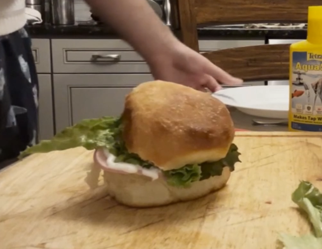

Generic Brand Burger
Ingrediants
- Bread
- Type of Meat
- A Slice of Lettuce
- Slices of Tomatoes (optional)
- Some sort of Plate (optional)
- Ranch (or any kind of dressing you wish)
- 1 Cutting Board
- 1 Knife
Why I Love It
Personnally, this is one of the sandwiches I make whenever im hungry and bored. This isnt the type of sandwich you'd go around and just give out to everyone, but its something basic to get the job done. If you had to rate it out of 5 stars, it'd probably land on a solid 3 or 2.5. Right down the middle of the road, not too bad but not too terrible. In the video, I refer to the sandwich as "Bug Brand", this is simply because I plan on showing said video to other people. It does not affect much about the sandwich, unless you really care about names for whatever reason.
Steps to Make
- Get the peice of bread you wish to use, and slice it in half.
- Get the type of salami you'd like, and slice into a few pieces of your choice.
- Get either tomatoes or lettuce, and slice appropriately to the amount of your liking.
- Put your ingredients together on one bun, make sure to seperate each Ingrediants toward each bun.
- Add additional dressings to your sandwich, if you so choose to.
- Eat sandwich.
- Enjoy!